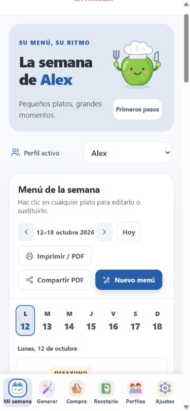

Uso básico · 01
Conoce tu espacio
Dónde: Barra de navegación
Encuentra cada función y comprueba para quién estás preparando el menú.
- En el móvil, utiliza la barra inferior. En el ordenador, utiliza el menú lateral.
- Mi semana muestra el calendario; Generar prepara propuestas; Compra reúne ingredientes; Recetario permite consultar platos; Perfiles guarda los datos de cada niño; Ajustes personaliza la app y reúne la ayuda.
- Comprueba el selector Perfil activo antes de trabajar. Cada perfil conserva sus menús y registros del colegio.
- Pulsa el logo o el texto Menú Infantil de la cabecera para volver a Mi semana.
Así sabrás que está listo
Sabes en qué perfil y sección estás trabajando.
